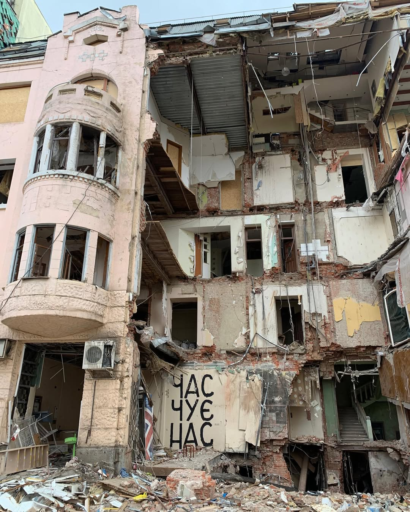
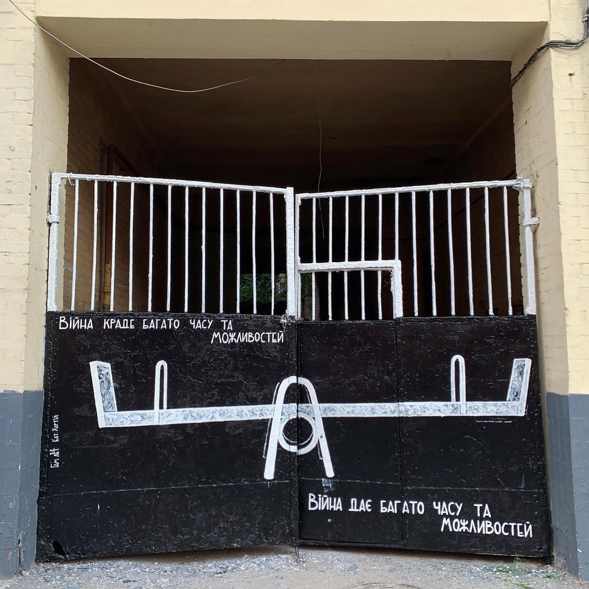
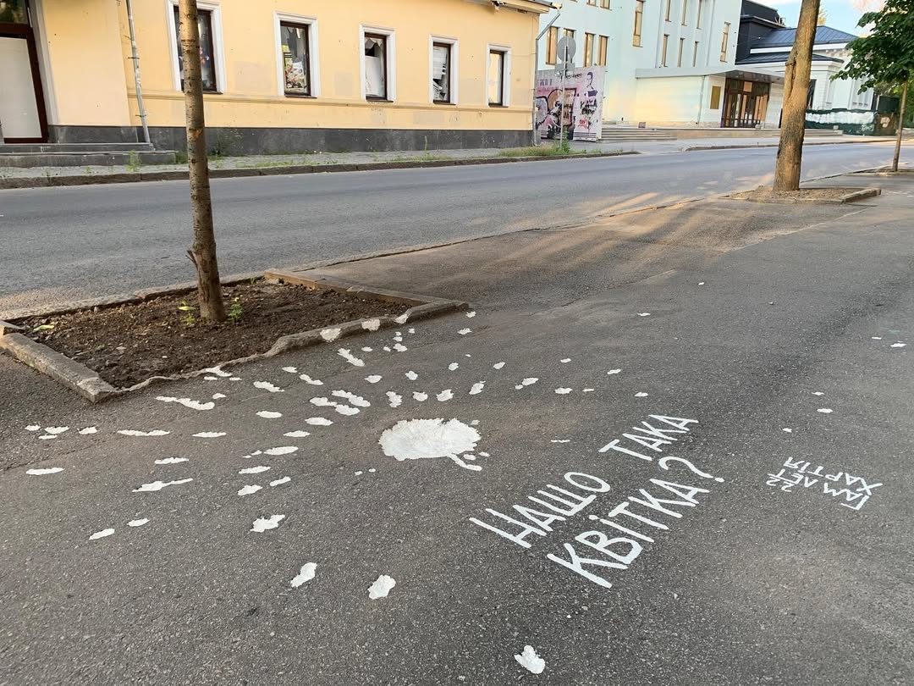
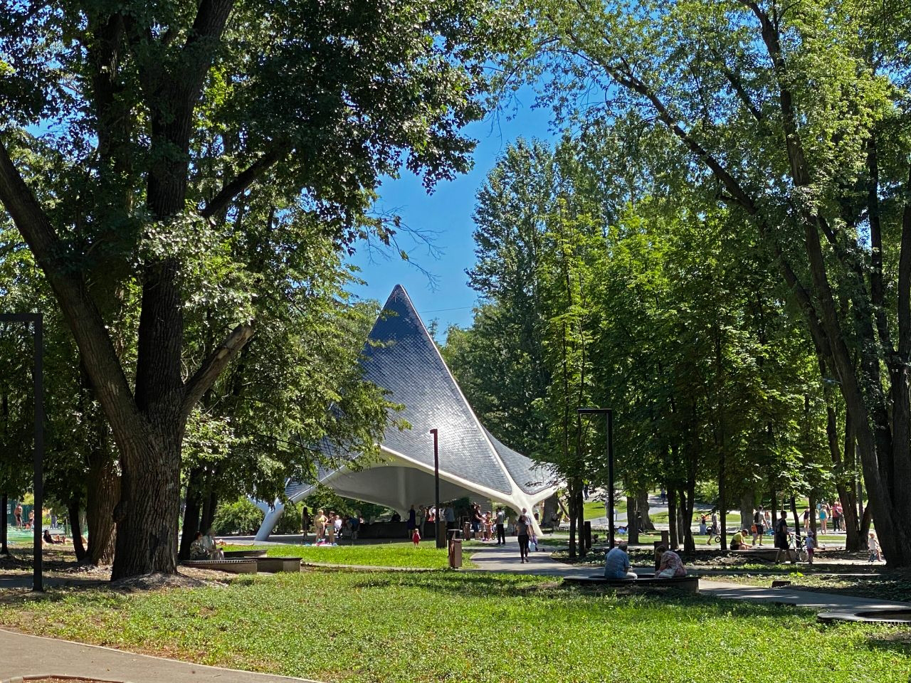
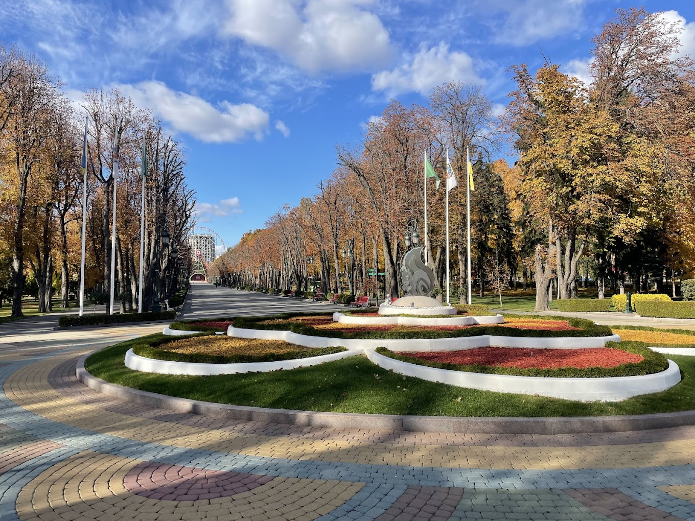
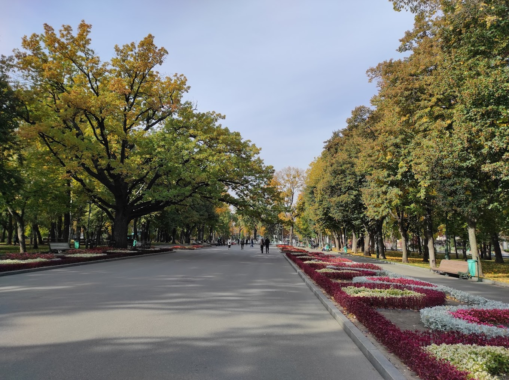

Це цитата одного місцевого медіа. Цьому місту дуже боляче бути Залізобетоном, та нього немає інших варіантів. Він – люди, а люди – він. У людях його сила.
Харків – це Сергій Жадан. Для мене це його розповідь "Власник найкращого клубу для геїв", але і інша творчість також.
Це, стовідсотково, малюнки на будівлях. Їх безліч, і це роботи справді великих сучасних митців і філософів. Ці малюнки треба бачити, їх треба шукати і відчувати.



Це втома. На жаль. Це сильна втома.
Це театральщина. Харків – це вистава Ніни Хижної "Хтось такі як я". Концепція покемонів – найкраще, що ставалось з поясненням того, як живе це місто.
І монолог "я буду тут завжди" від вистави Ніни Хижної "Оргія Кіборгів" описує стан Харків'ян, котрий проживаю, кожні дні, кожні місяці і вже понад 3 років
Це якісна музика, це андеграунд.
Це факт, що до тебе хоч раз точно підійде людина спитати дорогу чи то з фразою "excuse me, I'm a foreign journalist, can u please help me", чи то з "перепрошую, я тільки з Куп'янську, погано поки знаю місцевість". І те, і те відчувається як удар.
Це зелень, це безмежна зелень. І це не стереотип, це правда. Парків дійсно багато і вони дуже чисті, акуратні і модерні.



Це колективне спотворене бачення світу. Це бачення складно пояснити тим, для кого Схід не є домом.
Це білки.
Це те, як Ніка Кожушко змінила стількох людей.
Це ніжне скорочення “Ха”.
Це ЛЮКівськи “ключі від дому в Харкові”.
Це по-справжньому жити.